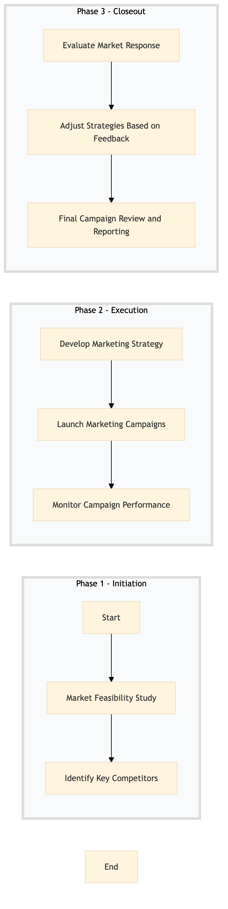

| Role | Steps |
|---|---|
| Revenue Manager | 1.1 3.1 |
| Marketing Manager | 1.2 2.1 2.3 3.2 |
| Marketing Executive | 2.2 3.3 |
| Marketing Analyst |
| Step | Name | Role | System | Input | Output | KPI | Dec? | Exc? | Pain Point / Risk |
|---|---|---|---|---|---|---|---|---|---|
| 1.1 | Market Feasibility Study | Revenue Manager | Oracle OPERA Cloud | Market analysis report | Feasibility study report | Completion within 2 weeks | Y | N | Accurate data collection and analysis for the feasibility study. |
| 1.2 | Identify Key Competitors | Marketing Manager | Oracle OPERA Cloud, IDeaS G3 RMS | Feasibility study report | Competitor analysis report | Less than 1 week | N | Y | Keeping up with competitor pricing and offerings. |
| 2.1 | Develop Marketing Strategy | Marketing Manager | Oracle OPERA Cloud, Salesforce | Competitor analysis report | Marketing strategy document | Completion within 3 weeks | Y | N | Creating compelling marketing messages that resonate with the target audience. |
| 2.2 | Launch Marketing Campaigns | Marketing Executive | Oracle OPERA Cloud, Book4Time | Marketing strategy document | Campaign launch report | Less than 1 week | N | Y | Effective execution of digital and traditional marketing campaigns. |
| 2.3 | Monitor Campaign Performance | Marketing Analyst | Oracle OPERA Cloud, Microsoft Power BI | Campaign launch report | Performance analysis report | Daily monitoring | Y | N | Real-time data collection and analysis for campaign optimization. |
| 3.1 | Evaluate Market Response | Revenue Manager | Oracle OPERA Cloud, IDeaS G3 RMS | Performance analysis report | Market response evaluation report | Completion within 1 week | Y | N | Interpreting market data to make informed decisions. |
| 3.2 | Adjust Strategies Based on Feedback | Marketing Manager | Oracle OPERA Cloud, Salesforce | Market response evaluation report | Adjusted marketing strategy document | Completion within 1 week | N | Y | Balancing quick adjustments with long-term strategic goals. |
| 3.3 | Final Campaign Review and Reporting | Marketing Executive | Oracle OPERA Cloud, Book4Time | Adjusted marketing strategy document | Campaign review report | Less than 1 week | N | Y | Summarizing campaign results and providing actionable insights. |
A structured process document for SM-SL-07 — New Market Entry & Feeder City Strategy at a Marriott full-service hotel. This process aims to initiate and execute strategies for entering new markets and managing feeder cities, leveraging Oracle OPERA Cloud PMS and other Marriott systems.